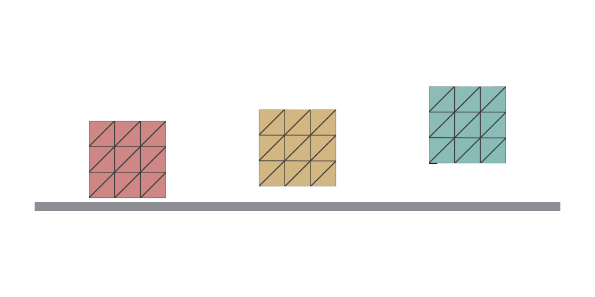
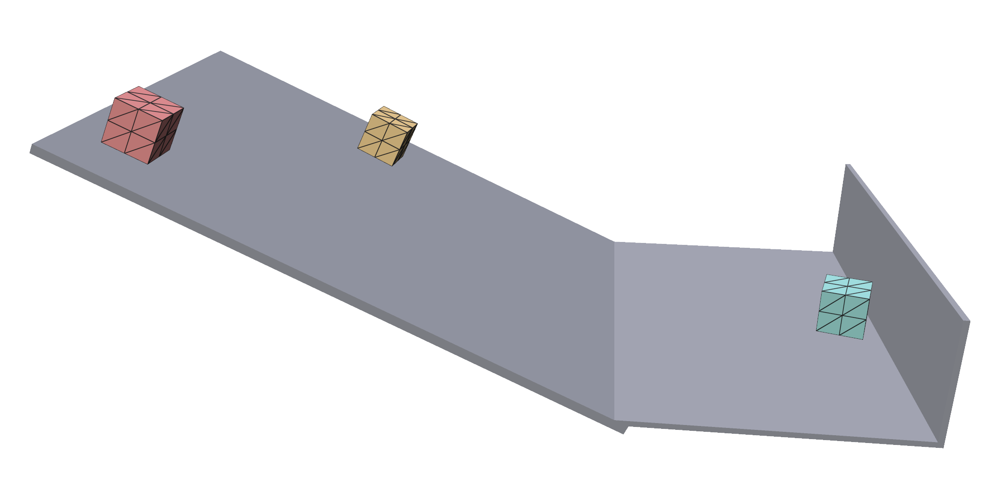
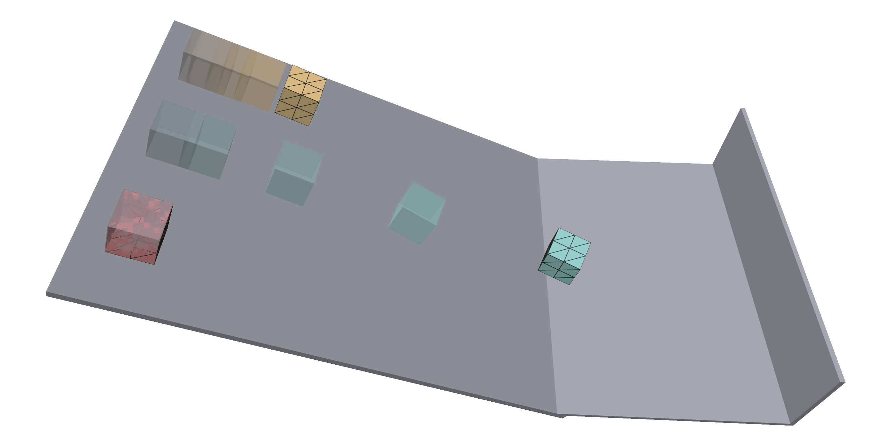
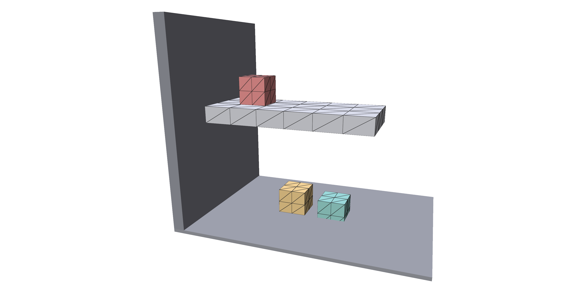
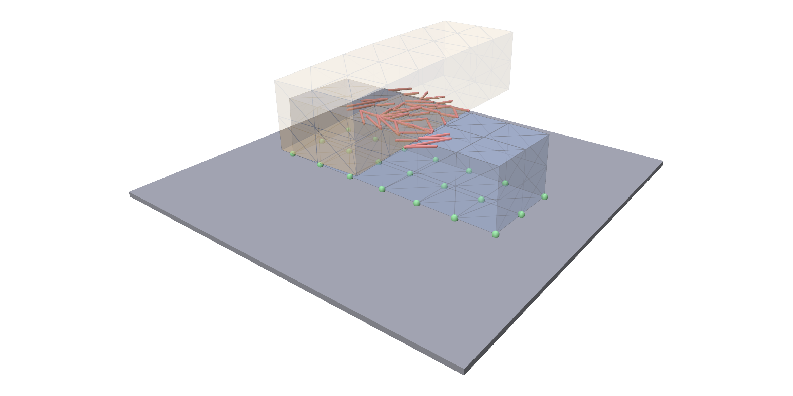

Contact¶
trusty.contact stops bodies from passing through each other and through
static floors and walls, with optional friction. Every body type takes part,
and all contacts are solved together with the bodies themselves in each step.
Capability: contact.
Quick example¶
A soft beam dropped at an angle onto a floor. It lands on one end, tips over and comes to rest:
world = trusty.World(backend=backend,
timestep=1.0 / 60.0,
# an impact can take more than the default 20 iterations
newton=trusty.NewtonConfig(max_iters=50))
# Turn contact on; dhat is the contact distance, in m.
trusty.contact.enable(world, trusty.contact.Config(dhat=1e-3))
add = trusty.fem.add_hex_solid if element == "hex" else trusty.fem.add_tet_solid
beam = add(world, mesh, material, density=1000.0, order=order)
trusty.add_floor_plane(world, z=0.0)
Contact is off by default. Turn it on with trusty.contact.enable once the
World is made and before its first step, then add bodies and static
geometry as usual.
| Call or setting | Meaning |
|---|---|
trusty.contact.enable(world, config) |
turn contact on, with config's settings; config may be left out for the defaults |
trusty.contact.Config(dhat=...) |
the contact distance, in m; see Contact distance and stiffness |
trusty.add_floor_plane(world, z) |
a horizontal floor at height z; see Floors, planes and walls |
The first touch is the hardest step to solve. The example raises the Newton
iteration cap from its default of 20, so that every step converges; check
world.last_report().converged if you drop things from higher or faster.
Full script: python examples/contact/beam_drop.py
"""A soft beam dropped at an angle onto a floor.
It lands on one end, tips over, and comes to rest lying flat. Contact keeps
it on the floor.
Usage:
python examples/contact/beam_drop.py # polyscope
python examples/contact/beam_drop.py --no-viewer # headless
python examples/contact/beam_drop.py --steps 240
python examples/contact/beam_drop.py --element tet # tet mesh
python examples/contact/beam_drop.py --order quadratic
python examples/contact/beam_drop.py --mesh foo.vtu # your own hex mesh
"""
from __future__ import annotations
import argparse
import sys
from pathlib import Path
import numpy as np
import trusty
sys.path.insert(0, str(Path(__file__).resolve().parent.parent))
from utils import init_polyscope, load_hex_mesh, load_tet_mesh # noqa: E402
ORDER = trusty.fem.ElementOrder
ORDERS = {
"linear": ORDER.Linear,
"quadratic": ORDER.Quadratic,
"serendipity": ORDER.QuadraticSerendipity, # hex only
}
BEAM_SIZE = (0.6, 0.2, 0.2)
BEAM_RES = (12, 4, 4)
TILT_DEG = 30.0 # about the y axis, so one end hits the floor first
DROP_HEIGHT = 0.3 # of the beam's lowest corner above the floor
def beam_vertices(V):
"""Tilt the beam about y, then lift its lowest corner to DROP_HEIGHT."""
a = np.radians(TILT_DEG)
R = np.array([[np.cos(a), 0.0, -np.sin(a)],
[0.0, 1.0, 0.0],
[np.sin(a), 0.0, np.cos(a)]])
V = (V - V.mean(axis=0)) @ R.T
V[:, 2] += DROP_HEIGHT - V[:, 2].min()
return V
def make_mesh(element: str, mesh_path: Path | None):
if element == "hex":
m = (load_hex_mesh(mesh_path, target_extent=max(BEAM_SIZE)) if mesh_path
else trusty.make_beam_hex_mesh(size=BEAM_SIZE, res=BEAM_RES))
return trusty.make_hex_mesh(beam_vertices(np.asarray(m.vertices)),
np.asarray(m.hexes))
m = (load_tet_mesh(mesh_path, target_extent=max(BEAM_SIZE)) if mesh_path
else trusty.make_beam_tet_mesh(size=BEAM_SIZE, res=BEAM_RES))
return trusty.make_tet_mesh(beam_vertices(np.asarray(m.vertices)),
np.asarray(m.tets))
def build_world(backend: str = "auto", element: str = "hex",
order=ORDER.Linear, mesh_path: Path | None = None):
trusty.check_capabilities("contact")
mesh = make_mesh(element, mesh_path)
material = trusty.StableNeoHookean(youngs_modulus=1e5, poisson_ratio=0.3)
world = trusty.World(backend=backend,
timestep=1.0 / 60.0,
# an impact can take more than the default 20 iterations
newton=trusty.NewtonConfig(max_iters=50))
# Turn contact on; dhat is the contact distance, in m.
trusty.contact.enable(world, trusty.contact.Config(dhat=1e-3))
add = trusty.fem.add_hex_solid if element == "hex" else trusty.fem.add_tet_solid
beam = add(world, mesh, material, density=1000.0, order=order)
trusty.add_floor_plane(world, z=0.0)
return world, beam
def surface(world, beam):
return (np.asarray(trusty.fem.read_positions(world, beam)),
np.asarray(trusty.fem.read_surface_triangles(world, beam)))
def run_headless(world, beam, steps: int):
print(f"Beam drop: {steps} steps")
lowest, unconverged = np.inf, 0
for i in range(steps):
world.step()
r = world.last_report()
unconverged += not r.converged
z = float(np.asarray(trusty.fem.read_positions(world, beam))[:, 2].min())
lowest = min(lowest, z)
if (i + 1) % 20 == 0:
print(f" step {i + 1:4d} lowest point z={z:+.5f} "
f"iters={r.iterations} converged={r.converged}")
x = np.asarray(trusty.fem.read_positions(world, beam))
print(f"Done. lowest point over the run {lowest:+.5f} m, "
f"final height of the top {x[:, 2].max():.3f} m, "
f"{unconverged} unconverged steps.")
def run_polyscope(world, beam, steps: int):
ps = init_polyscope(headless=False)
floor = np.array([[-1, -1, 0], [1, -1, 0], [1, 1, 0], [-1, 1, 0]], float)
ps.register_surface_mesh("floor", floor, np.array([[0, 1, 2], [0, 2, 3]]),
color=(0.6, 0.6, 0.6))
ps_mesh = ps.register_surface_mesh("beam", *surface(world, beam))
ps_mesh.set_edge_width(1.0)
state = {"i": 0, "playing": False} # opens paused
def callback():
import polyscope.imgui as psim
_, state["playing"] = psim.Checkbox("play", state["playing"])
psim.SameLine()
if (psim.Button("step") or state["playing"]) and state["i"] < steps:
world.step()
state["i"] += 1
ps_mesh.update_vertex_positions(surface(world, beam)[0])
psim.Text(f"step {state['i']} / {steps}")
r = world.last_report()
psim.Text(f"iters={r.iterations} residual={r.final_residual:.2e} "
f"{'converged' if r.converged else 'NOT converged'}")
ps.set_user_callback(callback)
ps.show()
def main():
p = argparse.ArgumentParser(description=__doc__.split("\n")[0])
p.add_argument("--backend", choices=["auto", "cpu", "accelerate", "cuda"], default="auto")
p.add_argument("--element", choices=["hex", "tet"], default="hex")
p.add_argument("--order", choices=list(ORDERS), default="linear",
help="element order; serendipity is for hexes only")
p.add_argument("--steps", type=int, default=120)
p.add_argument("--mesh", type=Path, default=None,
help="a hex (or, with --element tet, tet) mesh file, read with meshio")
p.add_argument("--no-viewer", action="store_true")
args = p.parse_args()
if args.element == "tet" and args.order == "serendipity":
p.error("--order serendipity needs --element hex")
world, beam = build_world(args.backend, args.element, ORDERS[args.order], args.mesh)
if args.no_viewer:
run_headless(world, beam, args.steps)
else:
run_polyscope(world, beam, args.steps)
if __name__ == "__main__":
main()
Contact distance and stiffness¶
Contact starts to push when two surfaces come closer than the contact
distance dhat, and pushes harder the closer they get, so they never touch.
Bodies at rest therefore sit a little less than dhat apart. kappa sets how
hard the push is:
trusty.contact.enable(world, trusty.contact.Config(
dhat=dhat, # contact distance (m): bodies rest about this far apart
kappa=kappa)) # contact stiffness: how hard it pushes back
Three cubes resting on a floor, with dhat = 5 mm, 2 cm and 5 cm from left
to right:

The gap under a 10 cm cube at rest, as a fraction of dhat:
dhat |
kappa = 1e3 |
1e4 | 1e5 (default) |
|---|---|---|---|
| 5 mm | 0.85 | 0.91 | 0.96 |
| 2 cm | 0.93 | 0.96 | 0.98 |
| 5 cm | 0.95 | 0.98 | 0.99 |
- Keep
dhatsmall next to your bodies (the default is 1 mm): the gap shows when it is not. - Raise
kappafor heavy bodies. With too low a value they sink deep into the contact distance. - Start every body farther than
dhatfrom everything else. Bodies that start overlapping, or inside a floor, are not pushed apart: they fall through or stop moving.
All the settings, as keyword arguments to trusty.contact.Config:
| Setting | Default | Meaning |
|---|---|---|
dhat |
1e-3 |
contact distance, m |
kappa |
1e5 |
contact stiffness |
epsv |
1e-3 |
sliding speed (m/s) below which contacts stick; see Friction |
project_positive_definite |
True |
make the contact term's Hessian positive definite, so every Newton step goes downhill |
broadphase |
FlatQbvh |
how nearby pairs are found. FlatQbvh and TwoLevel give the same results at different speeds; AffineRelative is only for scenes of near-rigid affine bodies. |
prune_ccd_by_rigid_motion |
True |
skip collision checks that a body's own rigid motion cannot trigger. It speeds up near-rigid bodies. |
Full script: python examples/contact/resting_gap.py
"""How far apart bodies rest, for a few contact distances and stiffnesses.
Each setting gets its own world: a cube dropped onto a floor (a wall mesh),
stepped until it rests. The script prints the gap under the cube as a
fraction of the contact distance `dhat`. With the default stiffness the gap is
close to `dhat`; a low stiffness lets a heavy body sink further into it.
Usage:
python examples/contact/resting_gap.py # polyscope
python examples/contact/resting_gap.py --no-viewer # print the table
python examples/contact/resting_gap.py --density 8000 # a heavier cube
"""
from __future__ import annotations
import argparse
import sys
from pathlib import Path
import numpy as np
import trusty
sys.path.insert(0, str(Path(__file__).resolve().parent.parent))
from utils import init_polyscope # noqa: E402
CUBE = 0.1
DHATS = (0.005, 0.02, 0.05) # the viewer shows these side by side
KAPPAS = (1e3, 1e4, 1e5) # 1e5 is the default
def build_world(dhat: float, kappa: float = 1e5, density: float = 2000.0,
x: float = 0.0, backend: str = "auto"):
trusty.check_capabilities("contact")
world = trusty.World(backend=backend, timestep=0.01)
trusty.contact.enable(world, trusty.contact.Config(
dhat=dhat, # contact distance (m): bodies rest about this far apart
kappa=kappa)) # contact stiffness: how hard it pushes back
m = trusty.make_beam_hex_mesh(size=(CUBE,) * 3, res=(3, 3, 3))
V = np.asarray(m.vertices, dtype=np.float64)
V = V - V.min(axis=0) + np.array([x - CUBE / 2, -CUBE / 2, 1.5 * dhat])
cube = trusty.fem.add_hex_solid(
world, trusty.make_hex_mesh(V, np.asarray(m.hexes)),
trusty.StableNeoHookean(youngs_modulus=1e6, poisson_ratio=0.3), density)
floor = np.array([[x - 0.3, -0.3, 0], [x + 0.3, -0.3, 0],
[x + 0.3, 0.3, 0], [x - 0.3, 0.3, 0]], dtype=np.float64)
trusty.contact.add_wall(world, "floor", floor,
np.array([[0, 1, 2], [0, 2, 3]], dtype=np.int32))
return world, cube
def settle(world, steps: int = 100):
for _ in range(steps):
world.step()
def gap(world, cube) -> float:
return float(np.asarray(trusty.fem.read_positions(world, cube))[:, 2].min())
def run_headless(density: float, backend: str):
print(f"Resting gap / dhat, for a {CUBE} m cube of density {density:g} kg/m^3")
print(" dhat (m) " + "".join(f"kappa={k:<8g}" for k in KAPPAS))
for dhat in DHATS:
row = []
for kappa in KAPPAS:
world, cube = build_world(dhat, kappa, density, backend=backend)
settle(world)
row.append(gap(world, cube) / dhat)
print(f" {dhat:<8g} " + "".join(f"{g:<14.2f}" for g in row))
def run_polyscope(density: float, backend: str):
ps = init_polyscope(headless=False)
for k, dhat in enumerate(DHATS):
world, cube = build_world(dhat, density=density, x=0.25 * k, backend=backend)
settle(world)
ps.register_surface_mesh(
f"dhat={dhat}", np.asarray(trusty.fem.read_positions(world, cube)),
np.asarray(trusty.fem.read_surface_triangles(world, cube)))
floor = np.array([[-0.15, -0.15, 0], [0.65, -0.15, 0], [0.65, 0.15, 0],
[-0.15, 0.15, 0]], dtype=np.float64)
ps.register_surface_mesh("floor", floor, np.array([[0, 1, 2], [0, 2, 3]]),
color=(0.6, 0.6, 0.6))
ps.show()
def main():
p = argparse.ArgumentParser(description=__doc__.split("\n")[0])
p.add_argument("--backend", choices=["auto", "cpu", "accelerate"], default="auto")
p.add_argument("--density", type=float, default=2000.0)
p.add_argument("--no-viewer", action="store_true")
args = p.parse_args()
if args.no_viewer:
run_headless(args.density, args.backend)
else:
run_polyscope(args.density, args.backend)
if __name__ == "__main__":
main()
Floors, planes and walls¶
Static geometry never moves, and bodies collide with it like with any other body. There are two kinds: infinite planes and triangle-mesh walls.
V, F = ramp_mesh()
trusty.contact.add_wall(world, "ramp", V, F, # a static triangle mesh
friction_mu=mu)
trusty.add_floor_plane(world, z=0.0) # the floor, normal +z
trusty.contact.add_plane(world, # a backstop, facing -x
origin=np.array([BACKSTOP_X, 0.0, 0.0]),
normal=np.array([-1.0, 0.0, 0.0]))
| Function | Adds |
|---|---|
trusty.add_floor_plane(world, z=0.0) |
a horizontal plane at height z, facing up |
trusty.contact.add_plane(world, origin, normal) |
a plane through origin; bodies stay on the side normal points to |
trusty.contact.add_wall(world, name, V, F) |
a static triangle mesh: vertices V (n, 3) and triangles F (m, 3), of any shape |
Each also takes friction_mu=; see Friction. Each returns the
new entity. Here the ramp is a wall, the run-out is a floor
plane, and a second plane stands at the far end as a backstop:

A wall must not touch a plane exactly: where the ramp meets the floor, the ramp continues a little below it.
Friction¶
Friction is off by default. Every body, wall and plane has its own Coulomb
coefficient, friction_mu, given when it is added; it is 0, frictionless,
unless you pass one. A contact holds while the sideways force is below its
coefficient times the force pressing the surfaces together, and a contact
uses the average of its two sides' coefficients. Here the three blocks and
the ramp all get the same coefficient:
trusty.contact.enable(world, trusty.contact.Config(
epsv=1e-5)) # below this sliding speed (m/s), contacts stick
material = trusty.StableNeoHookean(youngs_modulus=1e6, poisson_ratio=0.3)
blocks = {}
for name, y in LANES.items():
blocks[name] = trusty.fem.add_hex_solid(world, block_mesh(y), material,
density=1000.0, friction_mu=mu)
set_body_friction changes a body's coefficient afterwards, before the first
step:
trusty.contact.set_body_friction(world, blocks["slippery"], 0.0)
trusty.contact.set_body_friction(world, blocks["grippy"], 0.8)
Every function that adds a body takes friction_mu=: fem.add_hex_solid,
fem.add_tet_solid, embedded.add_embedded_solid, affine.add_affine_body,
shells.add_shell, rods.add_rod, mpm.add_mpm_particles,
subspace.add_hex_body and subspace.add_tet_body, as do add_wall,
add_plane and add_floor_plane.
The ramp is at 25°, so a contact holds when its coefficient is above tan 25° ≈ 0.47. Here, every quarter-second of the first second:

| Block | Its coefficient | With the ramp (0.4) | Result |
|---|---|---|---|
| teal | 0.0 | 0.2 | slides down fast, then across the floor into the backstop |
| orange | 0.4 | 0.4 | slides slowly |
| red | 0.8 | 0.6 | stays put |
The floor plane here is frictionless, the default, so the teal block keeps
sliding once it leaves the ramp. Friction runs on the cpu and accelerate
backends; on cuda, every coefficient must be 0. If a body that friction
should hold creeps slowly, lower epsv, as this example does.
Full script: python examples/contact/ramp.py
"""Three blocks on a ramp, each with its own friction.
The ramp is a static wall mesh, the run-out is a floor plane, and a second
plane stands at its far end as a backstop. Friction is per body: the ramp and
the middle block share `--mu`, and a contact uses the average of its two
sides' coefficients. The slippery block slides down
and across the floor into the backstop, the middle one creeps, and the grippy
one stays put.
Usage:
python examples/contact/ramp.py # polyscope
python examples/contact/ramp.py --no-viewer # headless
python examples/contact/ramp.py --steps 300
python examples/contact/ramp.py --mu 0.6 # ramp and middle block friction
"""
from __future__ import annotations
import argparse
import sys
from pathlib import Path
import numpy as np
import trusty
sys.path.insert(0, str(Path(__file__).resolve().parent.parent))
from utils import init_polyscope # noqa: E402
SLOPE_DEG = 25.0
RAMP_LENGTH = 1.2 # along the slope, m
RAMP_WIDTH = 0.9
BACKSTOP_X = 0.6 # the backstop plane, past the foot of the ramp
BLOCK = 0.1 # block edge, m
# Each block's lane across the ramp (y).
LANES = {"slippery": 0.0, "default": 0.28, "grippy": -0.28}
COLORS = {"slippery": (0.35, 0.75, 0.70), "default": (0.98, 0.70, 0.30),
"grippy": (0.937, 0.325, 0.314)}
def slope_frame():
"""Rotation taking ramp coordinates (x down the slope, z out of it) to the
world. The foot of the ramp is at the world origin."""
a = np.radians(SLOPE_DEG)
return np.array([[np.cos(a), 0.0, np.sin(a)],
[0.0, 1.0, 0.0],
[-np.sin(a), 0.0, np.cos(a)]])
def ramp_mesh():
"""The ramp's top face: one quad, from the top edge to just below the
floor. A wall must not touch a plane exactly, so its foot goes through."""
R = slope_frame()
w, foot = RAMP_WIDTH / 2, 0.03
corners = np.array([[-RAMP_LENGTH, -w, 0.0], [foot, -w, 0.0],
[foot, w, 0.0], [-RAMP_LENGTH, w, 0.0]])
return corners @ R.T, np.array([[0, 1, 2], [0, 2, 3]], dtype=np.int32)
def block_mesh(y):
"""A hex block resting near the top of the ramp, in lane `y`."""
m = trusty.make_beam_hex_mesh(size=(BLOCK,) * 3, res=(2, 2, 2))
V = np.asarray(m.vertices, dtype=np.float64)
V = V - V.mean(axis=0) + np.array([-RAMP_LENGTH + 0.12, y, BLOCK / 2 + 2e-3])
return trusty.make_hex_mesh(V @ slope_frame().T, np.asarray(m.hexes))
def build_world(backend: str = "auto", mu: float = 0.4):
trusty.check_capabilities("contact")
world = trusty.World(backend=backend, timestep=0.01,
newton=trusty.NewtonConfig(max_iters=50))
trusty.contact.enable(world, trusty.contact.Config(
epsv=1e-5)) # below this sliding speed (m/s), contacts stick
material = trusty.StableNeoHookean(youngs_modulus=1e6, poisson_ratio=0.3)
blocks = {}
for name, y in LANES.items():
blocks[name] = trusty.fem.add_hex_solid(world, block_mesh(y), material,
density=1000.0, friction_mu=mu)
trusty.contact.set_body_friction(world, blocks["slippery"], 0.0)
trusty.contact.set_body_friction(world, blocks["grippy"], 0.8)
V, F = ramp_mesh()
trusty.contact.add_wall(world, "ramp", V, F, # a static triangle mesh
friction_mu=mu)
trusty.add_floor_plane(world, z=0.0) # the floor, normal +z
trusty.contact.add_plane(world, # a backstop, facing -x
origin=np.array([BACKSTOP_X, 0.0, 0.0]),
normal=np.array([-1.0, 0.0, 0.0]))
return world, blocks
def centre(world, body):
return np.asarray(trusty.fem.read_positions(world, body)).mean(axis=0)
def run_headless(world, blocks, steps: int):
print(f"Ramp: {steps} steps")
start = {n: centre(world, b) for n, b in blocks.items()}
for i in range(steps):
world.step()
if (i + 1) % 50 == 0:
moved = " ".join(f"{n} {np.linalg.norm(centre(world, b) - start[n]):.3f}"
for n, b in blocks.items())
r = world.last_report()
print(f" step {i + 1:4d} distance moved (m): {moved} "
f"converged={r.converged}")
for n, b in blocks.items():
x = np.asarray(trusty.fem.read_positions(world, b))
print(f"Done. {n}: centre x={x[:, 0].mean():+.3f} m, lowest z={x[:, 2].min():+.4f} m")
def run_polyscope(world, blocks, steps: int):
ps = init_polyscope(headless=False)
V, F = ramp_mesh()
ps.register_surface_mesh("ramp", V, F, color=(0.6, 0.6, 0.6))
floor = np.array([[0, -0.6, 0], [BACKSTOP_X, -0.6, 0],
[BACKSTOP_X, 0.6, 0], [0, 0.6, 0]], float)
ps.register_surface_mesh("floor", floor, np.array([[0, 1, 2], [0, 2, 3]]),
color=(0.6, 0.6, 0.6))
meshes = {}
for n, b in blocks.items():
meshes[n] = ps.register_surface_mesh(
n, np.asarray(trusty.fem.read_positions(world, b)),
np.asarray(trusty.fem.read_surface_triangles(world, b)), color=COLORS[n])
state = {"i": 0, "playing": False} # opens paused
def callback():
import polyscope.imgui as psim
_, state["playing"] = psim.Checkbox("play", state["playing"])
psim.SameLine()
if (psim.Button("step") or state["playing"]) and state["i"] < steps:
world.step()
state["i"] += 1
for n, b in blocks.items():
meshes[n].update_vertex_positions(
np.asarray(trusty.fem.read_positions(world, b)))
psim.Text(f"step {state['i']} / {steps}")
ps.set_user_callback(callback)
ps.show()
def main():
p = argparse.ArgumentParser(description=__doc__.split("\n")[0])
p.add_argument("--backend", choices=["auto", "cpu", "accelerate"], default="auto")
p.add_argument("--steps", type=int, default=200)
p.add_argument("--mu", type=float, default=0.4,
help="friction coefficient of the ramp and the middle block")
p.add_argument("--no-viewer", action="store_true")
args = p.parse_args()
world, blocks = build_world(args.backend, args.mu)
if args.no_viewer:
run_headless(world, blocks, args.steps)
else:
run_polyscope(world, blocks, args.steps)
if __name__ == "__main__":
main()
Excluding bodies¶
Contact can be switched off for one pair of bodies, or for one body altogether:
trusty.contact.exclude_body_pair(world, cubes["passes the shelf"], shelf)
trusty.contact.exclude_body_from_contact(world, cubes["passes everything"])
| Function | Does |
|---|---|
exclude_body_pair(world, body_a, body_b) |
the two bodies pass through each other; both still collide with everything else |
exclude_body_from_contact(world, body) |
the body collides with nothing, floors and walls included |
Both take bodies (not walls or planes) and must be called before the first step. Three cubes dropped onto a shelf: the first lands on it, the second is excluded from the shelf and lands on the floor, and the third is excluded from contact and is half-way through the floor:

Full script: python examples/contact/exclude.py
"""Three cubes dropped onto a shelf, with contact switched off selectively.
The first cube lands on the shelf. The second is excluded from contact with
the shelf only, so it falls through it and lands on the floor. The third is
excluded from contact entirely and falls through everything.
Usage:
python examples/contact/exclude.py # polyscope
python examples/contact/exclude.py --no-viewer # headless
python examples/contact/exclude.py --steps 60
"""
from __future__ import annotations
import argparse
import sys
from pathlib import Path
import numpy as np
import trusty
sys.path.insert(0, str(Path(__file__).resolve().parent.parent))
from utils import init_polyscope # noqa: E402
SHELF = 0.6 # shelf length along x, clamped to a wall at x = 0
DECK = (0.34, 0.40) # shelf bottom and top, z
CUBE = 0.1
DROP_Z = 0.55 # cube bottoms start here
CUBE_X = {"lands": 0.15, "passes the shelf": 0.3, "passes everything": 0.45}
def offset_hex_mesh(size, res, lo):
m = trusty.make_beam_hex_mesh(size=size, res=res)
V = np.asarray(m.vertices, dtype=np.float64)
return trusty.make_hex_mesh(V - V.min(axis=0) + np.asarray(lo), np.asarray(m.hexes))
def build_world(backend: str = "auto"):
trusty.check_capabilities("contact")
world = trusty.World(backend=backend, timestep=0.01,
newton=trusty.NewtonConfig(max_iters=50))
trusty.contact.enable(world)
shelf = trusty.fem.add_hex_solid(
world, offset_hex_mesh((SHELF, 0.25, DECK[1] - DECK[0]), (6, 3, 1),
(0.0, -0.125, DECK[0])),
trusty.StableNeoHookean(youngs_modulus=1e8, poisson_ratio=0.3), density=1000.0)
trusty.fem.pin_face(world, shelf, axis=0, coord=0.0)
soft = trusty.StableNeoHookean(youngs_modulus=1e5, poisson_ratio=0.3)
cubes = {name: trusty.fem.add_hex_solid(
world, offset_hex_mesh((CUBE,) * 3, (2, 2, 2),
(x - CUBE / 2, -CUBE / 2, DROP_Z)),
soft, density=1000.0)
for name, x in CUBE_X.items()}
trusty.add_floor_plane(world, z=0.0)
trusty.contact.exclude_body_pair(world, cubes["passes the shelf"], shelf)
trusty.contact.exclude_body_from_contact(world, cubes["passes everything"])
return world, shelf, cubes
def lowest(world, body):
return float(np.asarray(trusty.fem.read_positions(world, body))[:, 2].min())
def run_headless(world, cubes, steps: int):
print(f"Exclusions: {steps} steps")
for i in range(steps):
world.step()
if (i + 1) % 10 == 0:
zs = " ".join(f"{n}: {lowest(world, b):+.3f}" for n, b in cubes.items())
print(f" step {i + 1:3d} lowest z {zs} "
f"converged={world.last_report().converged}")
def run_polyscope(world, shelf, cubes, steps: int):
ps = init_polyscope(headless=False)
floor = np.array([[-0.2, -0.4, 0], [1.0, -0.4, 0], [1.0, 0.4, 0], [-0.2, 0.4, 0]], float)
ps.register_surface_mesh("floor", floor, np.array([[0, 1, 2], [0, 2, 3]]),
color=(0.6, 0.6, 0.6))
bodies = {"shelf": shelf, **cubes}
meshes = {n: ps.register_surface_mesh(
n, np.asarray(trusty.fem.read_positions(world, b)),
np.asarray(trusty.fem.read_surface_triangles(world, b)))
for n, b in bodies.items()}
state = {"i": 0, "playing": False} # opens paused
def callback():
import polyscope.imgui as psim
_, state["playing"] = psim.Checkbox("play", state["playing"])
psim.SameLine()
if (psim.Button("step") or state["playing"]) and state["i"] < steps:
world.step()
state["i"] += 1
for n, b in bodies.items():
meshes[n].update_vertex_positions(
np.asarray(trusty.fem.read_positions(world, b)))
psim.Text(f"step {state['i']} / {steps}")
ps.set_user_callback(callback)
ps.show()
def main():
p = argparse.ArgumentParser(description=__doc__.split("\n")[0])
p.add_argument("--backend", choices=["auto", "cpu", "accelerate"], default="auto")
p.add_argument("--steps", type=int, default=60)
p.add_argument("--no-viewer", action="store_true")
args = p.parse_args()
world, shelf, cubes = build_world(args.backend)
if args.no_viewer:
run_headless(world, cubes, args.steps)
else:
run_polyscope(world, shelf, cubes, args.steps)
if __name__ == "__main__":
main()
Contact between body types¶
Every body type collides with every other: solids, embedded solids, affine bodies, shells, MPM particles and subspace bodies. Turning contact on is all it takes:
A tower of five body types settling, from the bottom: an affine cube (blue), a solid (red), an embedded solid (teal), a subspace body (purple) and a shell cube with a cloth sheet over it (yellow):
The examples/coupling/ folder has one example per pair:
| Bodies | Script |
|---|---|
| solid and solid | fem_fem.py |
| solid and affine body | fem_affine.py |
| solid and embedded solid | fem_embedded.py |
| solid and MPM particles | fem_mpm.py |
| affine body and affine body | affine_affine.py |
| affine body and embedded solid | affine_embedded.py |
| affine body and shell | affine_shell.py |
| embedded solid and MPM fluid, in a box of walls | embedded_drop_in_fluid.py |
| all five at once | all_bodies.py |
MPM particles collide with bodies and walls, but not with each other: the MPM material handles that.
Full script: python examples/coupling/all_bodies.py (slow: a minute or more)
"""All five body types coupled in ONE simulation.
affine (near-rigid) + fem (deformable hex) + embedded (voxelized) + shell +
subspace (reduced) -- all in one world, stacked into a single centered tower on
a shared floor with contact on, so every layer presses on the one
below. Every pair of body types interacts through the same contact model, in
one implicit solve.
The soft solids (fem / embedded / subspace) share E = 1e5 and at least 100
degrees of freedom each; the affine cube stays stiff (1e9) as the base of the stack.
Usage:
python examples/coupling/all_bodies.py # viewer (opens paused)
python examples/coupling/all_bodies.py --no-viewer # headless
python examples/coupling/all_bodies.py --backend accelerate # Apple solver
"""
from __future__ import annotations
import argparse
import tempfile
from pathlib import Path
import numpy as np
import trusty
FRICTION_MU = 0.5 # Coulomb coefficient of every body and the floor
def box_tris(center, half, n=1):
"""Axis-aligned cube surface, each face split into n x n quads with welded
shared edges/corners and outward winding. n=1 is the plain 8-vertex /
12-triangle box; larger n gives more surface samples so an embedded body's
coupled surface can follow the hex deformation instead of staying faceted.
"""
h = float(half)
verts: list = []
index: dict = {}
def vid(i, j, k):
key = (i, j, k)
if key not in index:
index[key] = len(verts)
verts.append([-h + 2.0 * h * i / n,
-h + 2.0 * h * j / n,
-h + 2.0 * h * k / n])
return index[key]
tris: list = []
def cell(p0, p1, p2, p3, outward):
a, b, d = np.asarray(verts[p0]), np.asarray(verts[p1]), np.asarray(verts[p2])
if np.dot(np.cross(b - a, d - a), outward) < 0.0:
p1, p3 = p3, p1 # flip winding so the normal points out
tris.append((p0, p1, p2))
tris.append((p0, p2, p3))
for axis in range(3):
for side in (0, n):
outward = np.zeros(3)
outward[axis] = 1.0 if side == n else -1.0
u, v = (a for a in range(3) if a != axis)
for s in range(n):
for t in range(n):
def g(su, sv, _a=axis, _s=side, _u=u, _v=v):
c = [0, 0, 0]
c[_a] = _s
c[_u] = su
c[_v] = sv
return vid(*c)
cell(g(s, t), g(s + 1, t), g(s + 1, t + 1), g(s, t + 1), outward)
V = np.asarray(verts, dtype=np.float64) + np.asarray(center, dtype=np.float64)
F = np.asarray(tris, dtype=np.int32)
return V, F
def shifted_hex(size, res, translate):
m = trusty.make_beam_hex_mesh(size=size, res=res)
V = np.asarray(m.vertices).copy()
V = V - V.min(axis=0) + np.asarray(translate, dtype=np.float64)
return trusty.make_hex_mesh(V, np.asarray(m.hexes))
def square_sheet(side, res, center):
cx, cy, cz = center
xs = np.linspace(-side / 2, side / 2, res)
V = np.array([[x + cx, y + cy, cz] for y in xs for x in xs], dtype=np.float64)
F = []
for j in range(res - 1):
for i in range(res - 1):
a = j * res + i
F.append((a, a + 1, a + res + 1))
F.append((a, a + res + 1, a + res))
return V, np.asarray(F, dtype=np.int32)
def build_subspace_basis(tmp: Path, size, res, num_handles):
from trusty.subspace.precompute import build_basis as bb, pack
mesh = trusty.make_beam_hex_mesh(size=size, res=res)
mat = trusty.StableNeoHookean(youngs_modulus=1e5, poisson_ratio=0.40)
world = trusty.World()
trusty.fem.add_hex_solid(world, mesh, mat, density=1000.0)
rv = np.asarray(mesh.vertices, dtype=np.float64)
hexes = np.asarray(mesh.hexes)
basis = bb.build_skinning_eigenmodes(
world=world, num_nodes=rv.shape[0], rest_positions=rv,
num_handles=num_handles, mesh_hash=bb.mesh_hash_sha256(rv, hexes))
path = tmp / "sub.basis"
pack.save(path, basis)
return trusty.subspace.load(str(path))
def build_world(tmp: Path, backend: str = "auto"):
trusty.check_capabilities("contact", "affine", "embedded", "subspace", "shells")
soft = trusty.StableNeoHookean(youngs_modulus=1e5, poisson_ratio=0.40)
world = trusty.World(backend=backend,
timestep=0.01,
newton=trusty.NewtonConfig(max_iters=80))
trusty.contact.enable(world, trusty.contact.Config(dhat=2e-3, kappa=1e6))
bodies = {}
half = 0.08 # half-extent of each stacked box (0.16 m footprint)
gap = 0.006 # rest gap between layers (and above the floor)
n_handles = 3 # subspace: 12 reduced degrees of freedom per handle
# Everything stacks into one centered tower, bottom -> top, so each layer
# presses on the one below. The stiff affine cube anchors the base; the
# three soft solids sit on it; the shell drapes over the top.
z = gap
# affine cube (stiff base)
cz = z + half
Vc, Fc = box_tris((0.0, 0.0, cz), half)
bodies["affine"] = trusty.affine.add_affine_body(
world, Vc, Fc, density=1000.0, stiffness=1e9)
z = cz + half + gap
# fem box (E=1e5, res 3 -> 4*4*4 = 64 nodes)
fem_mesh = shifted_hex((2 * half, 2 * half, 2 * half), (3, 3, 3), (-half, -half, z))
bodies["fem"] = trusty.fem.add_hex_solid(world, fem_mesh, soft, density=1000.0)
z += 2 * half + gap
# embedded box (E=1e5). The hex grid (voxel_size) carries the deformation;
# the subdivided box surface (n=4) samples that field so the coupled
# surface bulges instead of staying faceted between 8 corners.
ez = z + half
Ve, Fe = box_tris((0.0, 0.0, ez), half, n=4)
bodies["embedded"] = trusty.embedded.add_embedded_solid(
world, Ve, Fe, voxel_size=0.05, material=soft, density=1000.0)
z = ez + half + gap
# subspace (reduced) box (E=1e5, 3 handles)
sub_size = (2 * half, 2 * half, 0.12)
sub_res = (4, 4, 3) # 5*5*4 = 100 nodes
basis = build_subspace_basis(tmp, sub_size, sub_res, n_handles)
sub_mesh = shifted_hex(sub_size, sub_res, (-half, -half, z))
bodies["subspace"] = trusty.subspace.add_hex_body(
world, sub_mesh, soft, density=1000.0, basis=basis)
z += 0.12 + gap
# Shell bodies: a closed thin-shell CUBE sitting on the stack, plus the
# flat cloth sheet draped over it. A world holds one shell body, so
# both are concatenated into ONE shell body with two disconnected components
# (cube + sheet) -- cross-component contact lets the cloth drape over the
# cube, and each component relaxes toward its own rest shape (the cube's
# 90-degree edge dihedrals keep it boxy).
Vcube, Fcube = box_tris((0.0, 0.0, z + half), half, n=4) # ~98 boundary verts
z += 2 * half + gap
Vsheet, Fsheet = square_sheet(4 * half, 7, (0.0, 0.0, z + 0.01))
Vshell = np.vstack([Vcube, Vsheet])
Fshell = np.vstack([Fcube, Fsheet + Vcube.shape[0]]).astype(np.int32)
sh_cfg = trusty.shells.ShellConfig()
sh_cfg.youngs_modulus = 5.0e5
sh_cfg.poisson_ratio = 0.3
sh_cfg.thickness = 1.5e-3
sh_cfg.density = 1.0e3
bodies["shell"] = trusty.shells.add_shell(world, Vshell, Fshell, sh_cfg)
# Friction keeps the stack standing. It is set per body (a contact uses
# the average of the two sides' coefficients), and the floor carries its own.
for body in bodies.values():
trusty.contact.set_body_friction(world, body, FRICTION_MU)
trusty.add_floor_plane(world, 0.0, friction_mu=FRICTION_MU)
n_fem = np.asarray(fem_mesh.vertices).shape[0]
n_emb = np.asarray(trusty.fem.read_mesh(world, bodies["embedded"]).vertices).shape[0]
print(f"degrees of freedom per body: affine=12 fem={3 * n_fem} embedded={3 * n_emb} "
f"subspace={12 * n_handles} (reduced) shell={3 * Vshell.shape[0]} "
f"(cube+cloth)")
return world, bodies, sub_mesh
def run_headless(world, bodies, steps: int):
print("All five body types in one simulation "
"(affine + fem + embedded + shell + subspace).")
diverged = 0
for i in range(steps):
world.step()
r = world.last_report()
diverged += (not r.converged)
if (i + 1) % 20 == 0:
print(f" step {i + 1:4d} iters={r.iterations} "
f"res={r.final_residual:.2e} converged={r.converged}")
print(f"Done. {diverged} non-converged steps over {steps}.")
assert diverged == 0, f"{diverged} steps did not converge"
centres = {
"affine": np.asarray(trusty.affine.surface(world, bodies["affine"])[0]),
"fem": np.asarray(trusty.fem.read_positions(world, bodies["fem"])),
"embedded": np.asarray(trusty.embedded.read_embedded_surface(world, bodies["embedded"])),
"subspace": np.asarray(trusty.subspace.deformed_positions(world, body=bodies["subspace"])),
}
off = {n: float(np.linalg.norm(x[:, :2].mean(axis=0))) for n, x in centres.items()}
print("sideways offset of each layer (m): "
+ " ".join(f"{n}={d:.3f}" for n, d in off.items()))
assert max(off.values()) < 0.02, "the tower did not stay stacked"
print("OK: affine + fem + embedded + shell + subspace coupled in one solve.")
def run_polyscope(world, bodies, sub_mesh, steps: int):
try:
import polyscope as ps
except ImportError:
print("polyscope not installed; running headless.")
run_headless(world, bodies, steps)
return
ps.init()
ps.set_up_dir("z_up")
ps.set_ground_plane_mode("shadow_only")
# Floor at z = 0 (matches trusty.add_floor_plane).
fx, fy = 1.2, 0.6
floor_v = np.array(
[[-fx, -fy, 0.0], [fx, -fy, 0.0], [fx, fy, 0.0], [-fx, fy, 0.0]],
dtype=np.float64)
floor_f = np.array([[0, 1, 2], [0, 2, 3]], dtype=np.int32)
ps.register_surface_mesh("floor", floor_v, floor_f, color=(0.85, 0.85, 0.85))
# One renderable per body type, each read back through its own surface/mesh API.
Va, Fa = trusty.affine.surface(world, bodies["affine"])
ps_aff = ps.register_surface_mesh(
"affine", np.asarray(Va), np.asarray(Fa), color=(0.85, 0.35, 0.30))
fem_mesh = trusty.fem.read_mesh(world, bodies["fem"])
ps_fem = ps.register_volume_mesh(
"fem", np.asarray(fem_mesh.vertices).copy(),
hexes=np.asarray(fem_mesh.hexes), color=(0.30, 0.55, 0.85))
emb = bodies["embedded"]
ps_emb = ps.register_surface_mesh(
"embedded", np.asarray(trusty.embedded.read_embedded_surface(world, emb)),
np.asarray(trusty.embedded.surface_triangles(world, emb)),
color=(0.40, 0.75, 0.45), smooth_shade=False)
# The hex grid behind the embedded surface (what deforms), shown by
# default like the other embedded examples.
emb_hex = trusty.fem.read_mesh(world, emb)
ps_emb_hex = ps.register_volume_mesh(
"embedded hex", np.asarray(emb_hex.vertices).copy(),
hexes=np.asarray(emb_hex.hexes), color=(0.20, 0.50, 0.30))
shell = bodies["shell"]
ps_shell = ps.register_surface_mesh(
"shell", np.asarray(trusty.shells.read_positions(world, shell)),
np.asarray(trusty.shells.read_triangles(world, shell)),
color=(0.90, 0.75, 0.25), smooth_shade=False)
ps_sub = ps.register_volume_mesh(
"subspace", np.asarray(sub_mesh.vertices).copy(),
hexes=np.asarray(sub_mesh.hexes), color=(0.60, 0.45, 0.80))
state = {"i": 0, "playing": False} # opens paused -- step/play to advance
def cb():
import polyscope.imgui as psim
_, state["playing"] = psim.Checkbox("play", state["playing"])
if (psim.Button("step") or state["playing"]) and state["i"] < steps:
world.step()
state["i"] += 1
ps_aff.update_vertex_positions(np.asarray(trusty.affine.surface(world, bodies["affine"])[0]))
ps_fem.update_vertex_positions(
np.asarray(trusty.fem.read_mesh(world, bodies["fem"]).vertices))
ps_emb.update_vertex_positions(
np.asarray(trusty.embedded.read_embedded_surface(world, emb)))
ps_emb_hex.update_vertex_positions(
np.asarray(trusty.fem.read_mesh(world, emb).vertices))
ps_shell.update_vertex_positions(
np.asarray(trusty.shells.read_positions(world, shell)))
ps_sub.update_vertex_positions(
np.asarray(trusty.subspace.deformed_positions(world, body=bodies["subspace"])))
psim.Text(f"step {state['i']} / {steps}")
ps.set_user_callback(cb)
ps.show()
def main():
p = argparse.ArgumentParser(description=__doc__.split("\n")[0])
p.add_argument("--steps", type=int, default=150)
p.add_argument("--backend", choices=["auto", "cpu", "accelerate"], default="auto")
p.add_argument("--no-viewer", action="store_true",
help="run headless instead of launching the polyscope viewer")
args = p.parse_args()
with tempfile.TemporaryDirectory() as td:
world, bodies, sub_mesh = build_world(Path(td), args.backend)
if args.no_viewer:
run_headless(world, bodies, args.steps)
else:
run_polyscope(world, bodies, sub_mesh, args.steps)
if __name__ == "__main__":
main()
Observing contact¶
A contact observer is told what contact is doing at every Newton iteration:
how many pairs are close, which are pushing, and how far the solver may move.
Subclass trusty.contact.ContactObserver and override the hooks you need:
class ContactViewObserver(trusty.contact.ContactObserver):
"""Keeps the latest report from each hook, in a form the viewer can draw."""
def __init__(self, want_stencils: bool = True):
super().__init__() # required
self.want_stencils = want_stencils
self.n_prepare = 0
self.last_prepare = None
self.last_step_size = None
self.accepted = (None, None) # contact pairs, as a curve network
self.candidates = (None, None) # pairs that are close, but not yet in contact
self.plane_verts = None # vertices touching a plane
def wants_stencils(self):
return self.want_stencils
def on_step_size(self, report):
self.last_step_size = report
def on_prepare(self, report):
self.n_prepare += 1
self.last_prepare = report
if np.asarray(report.stencils.X).size:
self.keep_stencils(report.stencils)
Pass it to trusty.contact.enable:
obs = ContactViewObserver(want_stencils)
trusty.contact.enable(world, trusty.contact.Config(dhat=4e-3), observer=obs)
| Hook | Called with |
|---|---|
on_prepare(report) |
a ContactReport, every iteration |
on_step_size(report) |
a StepSizeReport: how far the solver may move before anything would pass through anything else, as a fraction of its step. alpha_pv for planes, alpha_min overall. |
wants_stencils() |
return True to fill report.stencils (below); it costs a copy, so it is empty otherwise |
ContactReport holds counts and the contact energy:
| Field | Meaning |
|---|---|
n_surf_verts, n_surf_edges, n_surf_faces |
size of the combined contact surface of every body and wall |
n_pt_broadphase, n_ee_broadphase, n_pv_broadphase |
candidate pairs found close: point-triangle, edge-edge, point-plane |
n_vv_active, n_ev_active, n_ee_active, n_fv_active, n_pv_active |
pairs inside dhat, by kind: vertex-vertex, edge-vertex, edge-edge, face-vertex, vertex-plane |
barrier_energy |
the contact energy |
stencils |
the geometry of every pair, when wants_stencils() is True |
report.stencils has the contact surface and the pairs as index arrays into
it. The report is only valid during the call, so copy what you keep:
X = np.asarray(st.X).copy() # contact-surface vertices
E, F = np.asarray(st.E), np.asarray(st.F)
edge_mid = X[E].mean(axis=1) if E.size else np.zeros((0, 3))
face_mid = X[F].mean(axis=1) if F.size else np.zeros((0, 3))
self.accepted = _segments([
(np.asarray(st.active_vv), X, X), # vertex-vertex
(np.asarray(st.active_ev), edge_mid, X), # edge-vertex
(np.asarray(st.active_ee), edge_mid, edge_mid), # edge-edge
(np.asarray(st.active_fv), face_mid, X)]) # face-vertex
pv = np.asarray(st.active_pv) # vertex indices
self.plane_verts = X[pv] if pv.size else None
| Field | Shape | Meaning |
|---|---|---|
X |
(n, 3) |
contact-surface vertex positions |
E, F |
(e, 2), (f, 3) |
its edges and triangles |
cand_ee, cand_fv |
(k, 2) |
candidate pairs: (edge, edge) and (face, vertex) |
active_vv, active_ev, active_ee, active_fv |
(k, 2) |
pairs inside dhat, as (vertex, vertex), (edge, vertex), (edge, edge) and (face, vertex) |
active_pv |
(k,) |
vertices inside dhat of a plane |
One beam resting across another: the red lines join the two sides of each contact pair, and the green points are the vertices touching the floor.

Full script: python examples/contact/observer.py
"""Watch contact as it happens, with a contact observer.
One beam falls crosswise onto another, which rests on a floor plane. An
observer receives a report from the contact solver at every Newton iteration
and keeps what the viewer draws: the contact pairs in red and the vertices
touching the floor in green.
The observer's three hooks:
- `on_prepare(report)` -- counts of candidate and active contact pairs,
and the contact energy.
- `on_step_size(report)` -- the step the solver may take before anything
would pass through anything else.
- `wants_stencils()` -- return True to also get `report.stencils`: the
geometry of every pair, for drawing. It costs a
copy, so it is empty otherwise; the viewer's
checkbox turns it on and off.
Usage:
python examples/contact/observer.py # polyscope
python examples/contact/observer.py --no-viewer # headless
python examples/contact/observer.py --steps 200
"""
from __future__ import annotations
import argparse
import numpy as np
import trusty
def _segments(groups):
"""One curve-network segment per pair, drawn from the centre of one
primitive to the centre of the other. `groups` is a list of
(pairs, ends_a, ends_b)."""
ends = [np.stack([a[p[:, 0]], b[p[:, 1]]], axis=1)
for p, a, b in groups if p.size]
if not ends:
return None, None
V = np.concatenate(ends, axis=0).reshape(-1, 3)
return V, np.arange(len(V), dtype=np.int32).reshape(-1, 2)
class ContactViewObserver(trusty.contact.ContactObserver):
"""Keeps the latest report from each hook, in a form the viewer can draw."""
def __init__(self, want_stencils: bool = True):
super().__init__() # required
self.want_stencils = want_stencils
self.n_prepare = 0
self.last_prepare = None
self.last_step_size = None
self.accepted = (None, None) # contact pairs, as a curve network
self.candidates = (None, None) # pairs that are close, but not yet in contact
self.plane_verts = None # vertices touching a plane
def wants_stencils(self):
return self.want_stencils
def on_step_size(self, report):
self.last_step_size = report
def on_prepare(self, report):
self.n_prepare += 1
self.last_prepare = report
if np.asarray(report.stencils.X).size:
self.keep_stencils(report.stencils)
def keep_stencils(self, st):
# The report is only valid during the call, so copy what we keep.
X = np.asarray(st.X).copy() # contact-surface vertices
E, F = np.asarray(st.E), np.asarray(st.F)
edge_mid = X[E].mean(axis=1) if E.size else np.zeros((0, 3))
face_mid = X[F].mean(axis=1) if F.size else np.zeros((0, 3))
self.accepted = _segments([
(np.asarray(st.active_vv), X, X), # vertex-vertex
(np.asarray(st.active_ev), edge_mid, X), # edge-vertex
(np.asarray(st.active_ee), edge_mid, edge_mid), # edge-edge
(np.asarray(st.active_fv), face_mid, X)]) # face-vertex
pv = np.asarray(st.active_pv) # vertex indices
self.plane_verts = X[pv] if pv.size else None
self.candidates = _segments([
(np.asarray(st.cand_ee), edge_mid, edge_mid),
(np.asarray(st.cand_fv), face_mid, X)])
def _beam(size, res, offset, crosswise: bool):
"""Hex beam centred on the origin, turned a quarter turn about z if asked,
then moved to `offset`. A rotation, not an axis swap: swapping axes would
turn every element inside out."""
mesh = trusty.make_beam_hex_mesh(size=size, res=res)
V = np.asarray(mesh.vertices, dtype=np.float64).copy()
V -= V.mean(axis=0)
if crosswise:
V[:, 0], V[:, 1] = -V[:, 1].copy(), V[:, 0].copy()
V += np.asarray(offset, dtype=np.float64)
return trusty.make_hex_mesh(V, np.asarray(mesh.hexes, dtype=np.int32))
def build_sim(backend: str, want_stencils: bool):
trusty.check_capabilities("contact")
size, res = (0.6, 0.2, 0.15), (6, 2, 2)
world = trusty.World(backend=backend,
timestep=1.0 / 120.0,
newton=trusty.NewtonConfig(max_iters=50))
obs = ContactViewObserver(want_stencils)
trusty.contact.enable(world, trusty.contact.Config(dhat=4e-3), observer=obs)
material = trusty.StableNeoHookean(youngs_modulus=5e5, poisson_ratio=0.3)
lower = trusty.fem.add_hex_solid(
world, _beam(size, res, (0.0, 0.0, 0.20), False), material, 1000.0)
upper = trusty.fem.add_hex_solid(
world, _beam(size, res, (0.0, 0.0, 0.50), True), material, 1000.0)
trusty.add_floor_plane(world, 0.0)
return world, obs, (lower, upper)
def _counts_line(obs) -> str:
r = obs.last_prepare
if r is None:
return "no report yet"
return (f"candidates pt={r.n_pt_broadphase} ee={r.n_ee_broadphase} "
f"pv={r.n_pv_broadphase} | active vv={r.n_vv_active} "
f"ev={r.n_ev_active} ee={r.n_ee_active} fv={r.n_fv_active} "
f"pv={r.n_pv_active} | energy={r.barrier_energy:.3e}")
def _step_line(obs) -> str:
s = obs.last_step_size
if s is None:
return "no step-size report yet"
return f"largest safe step: planes {s.alpha_pv:.3e}, overall {s.alpha_min:.3e}"
def run_headless(world, obs, steps: int):
print(f"Running {steps} steps headless...")
for i in range(steps):
world.step()
if (i + 1) % 20 == 0:
print(f" step {i + 1:4d} {_counts_line(obs)}")
print(f" {_step_line(obs)}")
n_pairs = 0 if obs.accepted[0] is None else len(obs.accepted[0]) // 2
print(f"Done. on_prepare ran {obs.n_prepare} times; {n_pairs} contact "
f"pairs at the last iteration.")
def run_polyscope(world, obs, bodies, steps: int):
try:
import polyscope as ps
import polyscope.imgui as psim
except ImportError:
print("polyscope not installed; falling back to headless. "
"(`pip install polyscope`, or use --no-viewer)")
run_headless(world, obs, steps)
return
ps.init()
ps.set_up_dir("z_up")
ps.set_ground_plane_mode("shadow_only")
volumes = []
for name, body in zip(("lower", "upper"), bodies):
mesh = trusty.fem.read_mesh(world, body)
v = ps.register_volume_mesh(name,
np.asarray(mesh.vertices).copy(),
hexes=np.asarray(mesh.hexes))
v.set_color((0.55, 0.7, 0.9) if name == "lower" else (0.95, 0.6, 0.35))
v.set_transparency(0.6)
volumes.append((body, v))
state = {"i": 0, "playing": False, "candidates": False}
def refresh():
for body, v in volumes:
v.update_vertex_positions(
np.asarray(trusty.fem.read_mesh(world, body).vertices))
V, E = obs.accepted
if V is not None:
ps.register_curve_network("contact pairs", V, E, radius=0.0025,
color=(0.95, 0.2, 0.2), enabled=True)
elif ps.has_curve_network("contact pairs"):
ps.get_curve_network("contact pairs").set_enabled(False)
V, E = obs.candidates
if state["candidates"] and V is not None:
ps.register_curve_network("candidates", V, E, radius=0.0008,
color=(0.6, 0.6, 0.6), enabled=True)
elif ps.has_curve_network("candidates"):
ps.get_curve_network("candidates").set_enabled(False)
if obs.plane_verts is not None:
ps.register_point_cloud("on the floor", obs.plane_verts,
radius=0.006, color=(0.2, 0.9, 0.3),
enabled=True)
elif ps.has_point_cloud("on the floor"):
ps.get_point_cloud("on the floor").set_enabled(False)
def advance():
if state["i"] < steps:
world.step()
state["i"] += 1
refresh()
def callback():
_, state["playing"] = psim.Checkbox("play", state["playing"])
psim.SameLine()
if psim.Button("step"):
advance()
elif state["playing"]:
advance()
# wants_stencils() is asked every iteration, so this takes effect on
# the next step; it costs nothing while off.
changed, obs.want_stencils = psim.Checkbox("fill report.stencils",
obs.want_stencils)
if changed and not obs.want_stencils:
obs.candidates = obs.accepted = (None, None)
obs.plane_verts = None
refresh()
_, state["candidates"] = psim.Checkbox("show candidate pairs",
state["candidates"])
psim.Text(f"step {state['i']} / {steps}")
r = world.last_report()
psim.Text(f"solve: iters={r.iterations} res={r.final_residual:.2e} "
f"{'ok' if r.converged else 'NOT converged'}")
psim.Text(_counts_line(obs))
psim.Text(_step_line(obs))
psim.Text(f"on_prepare x{obs.n_prepare}")
refresh()
ps.set_user_callback(callback)
ps.show()
def main():
p = argparse.ArgumentParser(description=__doc__.split("\n")[0])
p.add_argument("--steps", type=int, default=240)
p.add_argument("--backend", choices=["auto", "cpu", "accelerate", "cuda"],
default="auto")
p.add_argument("--no-stencils", action="store_true",
help="start with report.stencils turned off")
p.add_argument("--no-viewer", action="store_true")
args = p.parse_args()
world, obs, bodies = build_sim(args.backend, not args.no_stencils)
if args.no_viewer:
run_headless(world, obs, args.steps)
else:
run_polyscope(world, obs, bodies, args.steps)
if __name__ == "__main__":
main()
Reference¶
Every function and argument: trusty.contact reference.